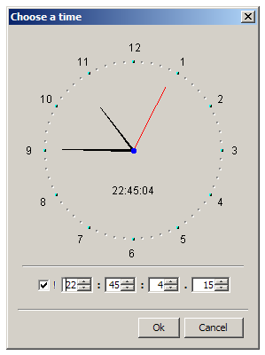

Class JTimeChooser
- All Implemented Interfaces:
java.awt.event.ActionListener,java.awt.event.WindowListener,java.awt.image.ImageObserver,java.awt.MenuContainer,java.io.Serializable,java.util.EventListener,javax.accessibility.Accessible,javax.swing.event.ChangeListener,javax.swing.RootPaneContainer,javax.swing.WindowConstants
public final class JTimeChooser extends JDefaultDialog implements javax.swing.event.ChangeListener
JTimeChooser class provides a dialog box for choosing a time.
Note that a valid I18NL10N database must be available!
The dialog box is modal, non-resizable and contains "Ok" and "Cancel" buttons to close it. Here's an example of a time chooser (Microsoft Windows L&F):

As can be seen, the time chooser's GUI consists of two main areas:
- An analogue clock showing the currently selected hour, minute and second. An optional digital clock can also be shown in the clock's panel. Both clocks are updated in real-time.
- Four
JSpinners for selecting the hour, minute, second and millisecond.
There's also the exclamation checkbox that allows tracking (and selecting) the current time.
Depending on the desired functionality, the time chooser can be allowed to select only:
- the hour and minute,
- the hour, minute and second,
- or the hour, minute, second and millisecond.
When the clock is showing HMS or HMS.ms, the user can also select the seconds by clicking on the clock's face.
When the user closes the time chooser's dialog box, its state should be queried as follows:
if (!myTimeChooser.isCancelled()) {
TimeStamp timeStamp = myTimeChooser.getSelectedTime();
// rest of code
}
Note that the system resources must be initialised (see JARResources.fSystemResources).
Note that this class cannot be subclassed!
- Version:
- 06/08/2019
- Author:
- Sven Maerivoet
- See Also:
TimeStamp, Serialized Form
-
Nested Class Summary
Nested Classes Modifier and Type Class Description static classJTimeChooser.EDigitalClockUseful constants to specify whether or not a digital indication of the current time should be shown.static classJTimeChooser.ETypeUseful constants to specify a time chooser for selecting only the hour and minute, and/or second and/or millisecond.static classJTimeChooser.EUpdatingMethodUseful constants to specify a time chooser that shows a clock which is updated continuously or in second time steps.Nested classes/interfaces inherited from class org.sm.smtools.swing.dialogs.JDefaultDialog
JDefaultDialog.EModality, JDefaultDialog.ESizeNested classes/interfaces inherited from class javax.swing.JDialog
javax.swing.JDialog.AccessibleJDialogNested classes/interfaces inherited from class java.awt.Dialog
java.awt.Dialog.AccessibleAWTDialog, java.awt.Dialog.ModalExclusionType, java.awt.Dialog.ModalityTypeNested classes/interfaces inherited from class java.awt.Window
java.awt.Window.AccessibleAWTWindow, java.awt.Window.TypeNested classes/interfaces inherited from class java.awt.Container
java.awt.Container.AccessibleAWTContainerNested classes/interfaces inherited from class java.awt.Component
java.awt.Component.AccessibleAWTComponent, java.awt.Component.BaselineResizeBehavior, java.awt.Component.BltBufferStrategy, java.awt.Component.FlipBufferStrategy -
Field Summary
Fields inherited from class javax.swing.JDialog
accessibleContext, rootPane, rootPaneCheckingEnabledFields inherited from class java.awt.Dialog
DEFAULT_MODALITY_TYPEFields inherited from class java.awt.Component
BOTTOM_ALIGNMENT, CENTER_ALIGNMENT, LEFT_ALIGNMENT, RIGHT_ALIGNMENT, TOP_ALIGNMENTFields inherited from interface java.awt.image.ImageObserver
ABORT, ALLBITS, ERROR, FRAMEBITS, HEIGHT, PROPERTIES, SOMEBITS, WIDTHFields inherited from interface javax.swing.WindowConstants
DISPOSE_ON_CLOSE, DO_NOTHING_ON_CLOSE, EXIT_ON_CLOSE, HIDE_ON_CLOSE -
Constructor Summary
Constructors Constructor Description JTimeChooser(javax.swing.JFrame owner, java.lang.String title, JDefaultDialog.EType dialogType, JTimeChooser.EType type, JTimeChooser.EUpdatingMethod updatingMethod, JTimeChooser.EDigitalClock digitalClock)Constructs aJTimeChooserobject. -
Method Summary
Modifier and Type Method Description voidactionPerformed(java.awt.event.ActionEvent e)The dialog box's action listener.TimeStampgetSelectedTime()Returns the currently selected time.protected voidinitialiseClass(java.lang.Object[] parameters)Allows custom initialisation of a subclass's member fields.protected voidsetupMainPanel(javax.swing.JPanel mainPanel)Sets up the custom content in the dialog box.protected java.lang.StringsetupWindowTitle()Sets up the window title of the dialog box.voidstateChanged(javax.swing.event.ChangeEvent e)Methods inherited from class org.sm.smtools.swing.dialogs.JDefaultDialog
activate, cancelSelected, disableAutoPositioning, initialiseDuringActivation, isCancelled, isShown, okSelected, setupInitialDialogSize, updateGUI, windowActivated, windowClosed, windowClosing, windowDeactivated, windowDeiconified, windowIconified, windowOpenedMethods inherited from class javax.swing.JDialog
addImpl, createRootPane, dialogInit, getAccessibleContext, getContentPane, getDefaultCloseOperation, getGlassPane, getGraphics, getJMenuBar, getLayeredPane, getRootPane, getTransferHandler, isDefaultLookAndFeelDecorated, isRootPaneCheckingEnabled, paramString, processWindowEvent, remove, repaint, setContentPane, setDefaultCloseOperation, setDefaultLookAndFeelDecorated, setGlassPane, setJMenuBar, setLayeredPane, setLayout, setRootPane, setRootPaneCheckingEnabled, setTransferHandler, updateMethods inherited from class java.awt.Dialog
addNotify, getModalityType, getTitle, isModal, isResizable, isUndecorated, setBackground, setModal, setModalityType, setOpacity, setResizable, setShape, setTitle, setUndecorated, setVisible, toBackMethods inherited from class java.awt.Window
addPropertyChangeListener, addPropertyChangeListener, addWindowFocusListener, addWindowListener, addWindowStateListener, createBufferStrategy, createBufferStrategy, dispose, getBackground, getBufferStrategy, getFocusableWindowState, getFocusCycleRootAncestor, getFocusOwner, getFocusTraversalKeys, getIconImages, getInputContext, getListeners, getLocale, getModalExclusionType, getMostRecentFocusOwner, getOpacity, getOwnedWindows, getOwner, getOwnerlessWindows, getShape, getToolkit, getType, getWarningString, getWindowFocusListeners, getWindowListeners, getWindows, getWindowStateListeners, isActive, isAlwaysOnTop, isAlwaysOnTopSupported, isAutoRequestFocus, isFocusableWindow, isFocusCycleRoot, isFocused, isLocationByPlatform, isOpaque, isShowing, isValidateRoot, pack, paint, processEvent, processWindowFocusEvent, processWindowStateEvent, removeNotify, removeWindowFocusListener, removeWindowListener, removeWindowStateListener, setAlwaysOnTop, setAutoRequestFocus, setBounds, setBounds, setCursor, setFocusableWindowState, setFocusCycleRoot, setIconImage, setIconImages, setLocation, setLocation, setLocationByPlatform, setLocationRelativeTo, setMinimumSize, setModalExclusionType, setSize, setSize, setType, toFrontMethods inherited from class java.awt.Container
add, add, add, add, add, addContainerListener, applyComponentOrientation, areFocusTraversalKeysSet, doLayout, findComponentAt, findComponentAt, getAlignmentX, getAlignmentY, getComponent, getComponentAt, getComponentAt, getComponentCount, getComponents, getComponentZOrder, getContainerListeners, getFocusTraversalPolicy, getInsets, getLayout, getMaximumSize, getMinimumSize, getMousePosition, getPreferredSize, invalidate, isAncestorOf, isFocusCycleRoot, isFocusTraversalPolicyProvider, isFocusTraversalPolicySet, list, list, paintComponents, print, printComponents, processContainerEvent, remove, removeAll, removeContainerListener, setComponentZOrder, setFocusTraversalKeys, setFocusTraversalPolicy, setFocusTraversalPolicyProvider, setFont, transferFocusDownCycle, validate, validateTreeMethods inherited from class java.awt.Component
add, addComponentListener, addFocusListener, addHierarchyBoundsListener, addHierarchyListener, addInputMethodListener, addKeyListener, addMouseListener, addMouseMotionListener, addMouseWheelListener, checkImage, checkImage, coalesceEvents, contains, contains, createImage, createImage, createVolatileImage, createVolatileImage, disableEvents, dispatchEvent, enableEvents, enableInputMethods, firePropertyChange, firePropertyChange, firePropertyChange, firePropertyChange, firePropertyChange, firePropertyChange, firePropertyChange, firePropertyChange, firePropertyChange, getBaseline, getBaselineResizeBehavior, getBounds, getBounds, getColorModel, getComponentListeners, getComponentOrientation, getCursor, getDropTarget, getFocusListeners, getFocusTraversalKeysEnabled, getFont, getFontMetrics, getForeground, getGraphicsConfiguration, getHeight, getHierarchyBoundsListeners, getHierarchyListeners, getIgnoreRepaint, getInputMethodListeners, getInputMethodRequests, getKeyListeners, getLocation, getLocation, getLocationOnScreen, getMouseListeners, getMouseMotionListeners, getMousePosition, getMouseWheelListeners, getName, getParent, getPropertyChangeListeners, getPropertyChangeListeners, getSize, getSize, getTreeLock, getWidth, getX, getY, hasFocus, imageUpdate, isBackgroundSet, isCursorSet, isDisplayable, isDoubleBuffered, isEnabled, isFocusable, isFocusOwner, isFontSet, isForegroundSet, isLightweight, isMaximumSizeSet, isMinimumSizeSet, isPreferredSizeSet, isValid, isVisible, list, list, list, paintAll, prepareImage, prepareImage, printAll, processComponentEvent, processFocusEvent, processHierarchyBoundsEvent, processHierarchyEvent, processInputMethodEvent, processKeyEvent, processMouseEvent, processMouseMotionEvent, processMouseWheelEvent, remove, removeComponentListener, removeFocusListener, removeHierarchyBoundsListener, removeHierarchyListener, removeInputMethodListener, removeKeyListener, removeMouseListener, removeMouseMotionListener, removeMouseWheelListener, removePropertyChangeListener, removePropertyChangeListener, repaint, repaint, repaint, requestFocus, requestFocus, requestFocus, requestFocus, requestFocusInWindow, requestFocusInWindow, requestFocusInWindow, revalidate, setComponentOrientation, setDropTarget, setEnabled, setFocusable, setFocusTraversalKeysEnabled, setForeground, setIgnoreRepaint, setLocale, setMaximumSize, setMixingCutoutShape, setName, setPreferredSize, toString, transferFocus, transferFocusBackward, transferFocusUpCycleMethods inherited from class java.lang.Object
clone, equals, getClass, hashCode, notify, notifyAll, wait, wait, wait
-
Constructor Details
-
JTimeChooser
public JTimeChooser(javax.swing.JFrame owner, java.lang.String title, JDefaultDialog.EType dialogType, JTimeChooser.EType type, JTimeChooser.EUpdatingMethod updatingMethod, JTimeChooser.EDigitalClock digitalClock)Constructs aJTimeChooserobject.Depending on the desired functionality, the time chooser can be allowed to select only:
- the hour and minute,
- the hour, minute and second,
- or the hour, minute, second and millisecond.
- Parameters:
owner- the frame in which this dialog is to be displayedtitle- the dialog's window titledialogType- the type of dialogtype- theETypetype of time chooserupdatingMethod- anEUpdatingMethodflag indicating whether or not the clock's hands should be updated continuously or discretelydigitalClock- anEDigitalClockflag indicating whether or not a digital indication of the current time should be shown- See Also:
JTimeChooser.EType,JTimeChooser.EUpdatingMethod,JTimeChooser.EDigitalClock
-
-
Method Details
-
stateChanged
public void stateChanged(javax.swing.event.ChangeEvent e)- Specified by:
stateChangedin interfacejavax.swing.event.ChangeListener
-
actionPerformed
public void actionPerformed(java.awt.event.ActionEvent e)Description copied from class:JDefaultDialogThe dialog box's action listener.Note that when overriding this method in a subclass, its parent should explicitly be called in order to guarantee the correct processing of the user's input ("Ok" and "Ok/Cancel" type of dialog boxes):
super.actionPerformed(e);
// rest of method's code- Specified by:
actionPerformedin interfacejava.awt.event.ActionListener- Overrides:
actionPerformedin classJDefaultDialog- Parameters:
e- theActionEventthat is received
-
getSelectedTime
Returns the currently selected time.- Returns:
- the currently selected time
-
initialiseClass
protected void initialiseClass(java.lang.Object[] parameters)Description copied from class:JDefaultDialogAllows custom initialisation of a subclass's member fields.Note that the caller should specify
nullif no parameters are specified.- Overrides:
initialiseClassin classJDefaultDialog- Parameters:
parameters- an array ofObjects
-
setupWindowTitle
protected final java.lang.String setupWindowTitle()Description copied from class:JDefaultDialogSets up the window title of the dialog box.In order to obtain a custom dialog title, the caller should override this method (it returns
nullin the baseclass).- Overrides:
setupWindowTitlein classJDefaultDialog- Returns:
- the window title of the dialog box
-
setupMainPanel
protected void setupMainPanel(javax.swing.JPanel mainPanel)Description copied from class:JDefaultDialogSets up the custom content in the dialog box.A subclass should typically create labels, inputfields, ... in the dialog boxes main panel, by overriding this method.
Note that the
mainPanelobject is already constructed!- Overrides:
setupMainPanelin classJDefaultDialog- Parameters:
mainPanel- the area of the dialog box that is reserved for custom content
-